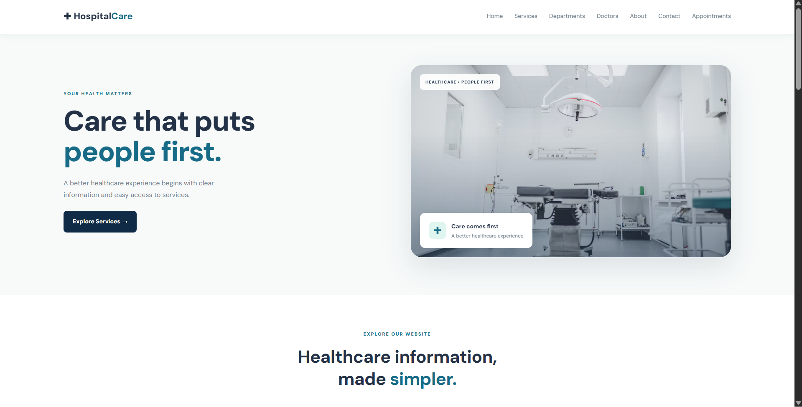
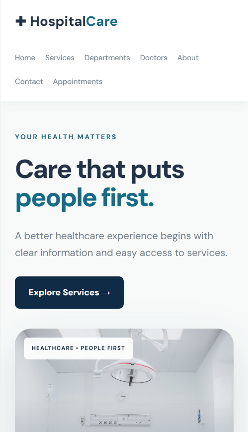

MY FRONT-END PROJECT
HospitalCare
A healthcare website redesign concept focused on a clear, welcoming, and responsive user experience.
Project overview
I created this project to building a healthcare-themed website.
Website screenshots

Desktop homepage

Mobile layout
Features
- Responsive desktop and mobile layout
- Navigation between website sections
- Healthcare department and service cards
- Interactive button hover effects
- Demo appointment form with a confirmation message
Technologies used
HTML5
CSS3
JavaScript
Responsive Design
Project note
This is an independent, unofficial website redesign concept. It is not affiliated with or endorsed by a hospital. The appointment form is for demonstration only and does not submit or book appointments.